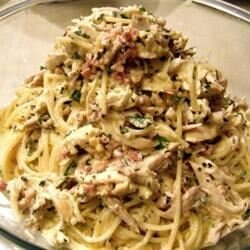

Carbonara

Description
Quick and cheap carbonara recipe
Ingredients
- Spaghetti - 16 oz
- Guanciale - 100g
- Parmiggiano-Regiano - 100g
- Egg - 4
- Water
Steps
- Prepare egg & cheese mix by mixing 4 eggs and finely grated Parmiggiano-Regiano in a bowl
- Put in Guanciale in cold pan, and heat up in low heat for 15 minutes until the fat renders
- Cook the pasta in water. Follow the instructions or until al dente
- Turn off the heat on the pan, and add the pasta to the pan and coat pasta in Guanciale fat
- Pour in the egg & cheese mix
- Serve hot